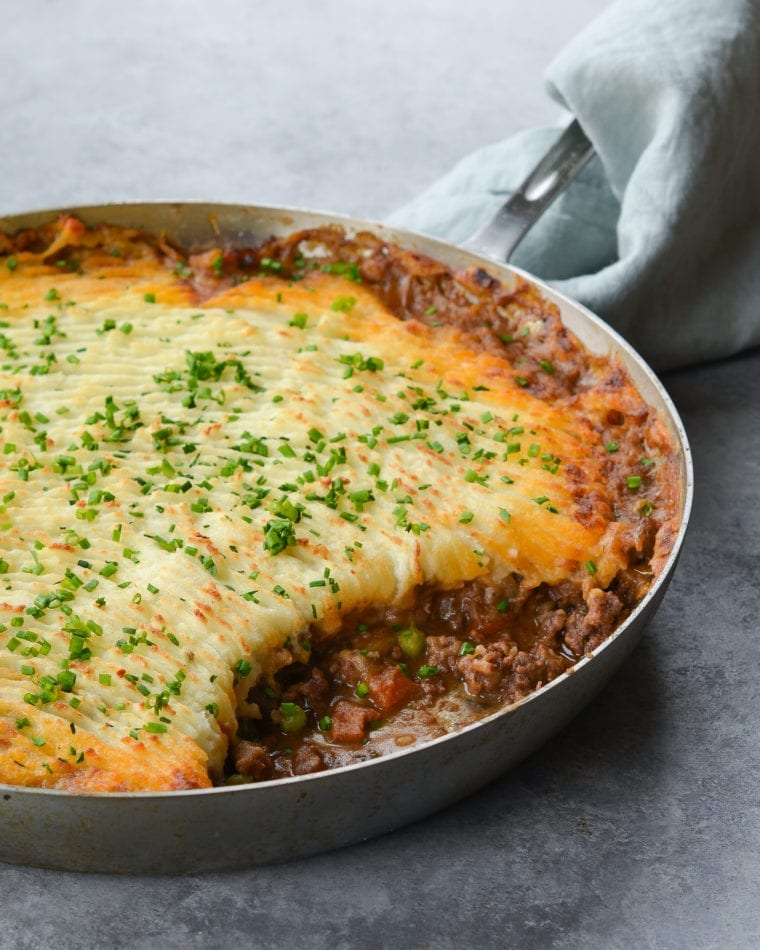

Home
Irish Shepherd's Pie

This Irish shepherd's pie is a lovely alternative to the much
more common corned beef and cabbage you may have been planning for
St. Patrick's Day dinner.
Ingredients:
- 1 tablespoon olive oil
- 1 tablespoon butter
- 2 pounds lean ground lamb
- 1 onion, diced
- ⅓ cup all-purpose flour
- 3 cloves garlic, minced
- 1 tablespoon ketchup
- 2 teaspoons minced fresh rosemary
- 1 teaspoon paprika
- ⅛ teaspoon ground cinnamon
- salt and ground black pepper to taste
- 2 ½ cups water, or as needed
- 1 (12 ounce) package frozen peas and carrots, thawed
- 2 ½ pounds Yukon Gold potatoes, peeled and halved
- ¼ pound Irish cheese (such as Dubliner), shredded
- ¼ cup cream cheese
- 1 tablespoon butter
- 1 pinch ground cayenne pepper
- 1 large egg yolk
- 2 tablespoons milk
Steps:
- Preheat the oven to 375 degrees F (190 degrees C).
-
Place olive oil and butter in a Dutch oven over medium heat.
Stir in ground lamb and onion; cook and stir until meat
is brown and crumbly, about 10 minutes.
-
Stir in flour until incorporated. Mix in garlic, ketchup,
rosemary, paprika, cinnamon, salt, and pepper; cook and stir
until garlic is fragrant, 2 to 3 minutes.
-
Stir in water, scraping up any brown bits from the bottom of
the Dutch oven. Reduce heat to medium-low and bring mixture
to a simmer; cook and stir until thick, 5 to 6 minutes.
-
Remove lamb mixture from heat, then stir in peas and
carrots until combined.
-
Spread lamb mixture into the bottom of a 9x13-inch baking dish;
set aside.
-
Place potatoes into a large pot of salted water. Bring to a boil,
reduce heat to medium, and cook until tender, about 15 minutes.
Drain well and return potatoes to the pot.
-
Mash Irish cheese, cream cheese, butter, and cayenne pepper into
potatoes until smooth. Season with salt and black pepper.
-
Whisk together egg yolk and milk in a small bowl; stir into
mashed potato mixture.
-
Top lamb mixture in the baking dish with mashed potatoes;
spread evenly to cover.
-
Bake in the preheated oven until the top is golden brown and
sauce is bubbling up around the edges, 25 to 30 minutes.